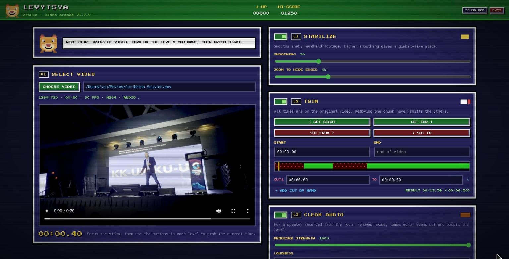
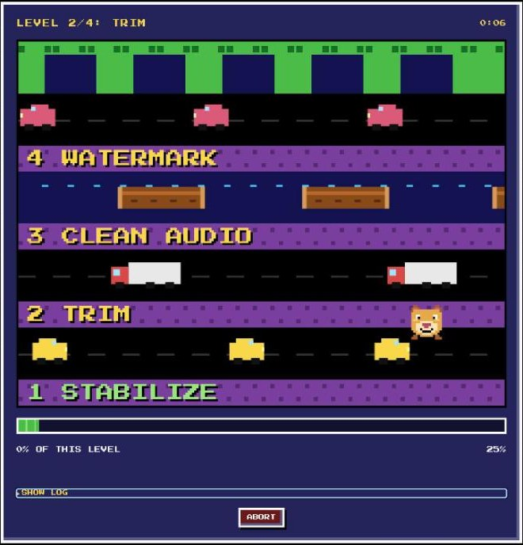

STABILIZE
Filmed handheld from the back of the room? Levytsya tracks the camera shake and smooths it into a steady, gimbal-like shot.
- Adjustable smoothing
- Slight zoom hides the edges
- Works on iPhone portrait and landscape
LEVYTSYA · VIDEO ARCADE
Turn a shaky, noisy recording of your talk into a video you're proud to share. Five levels, one button, and a lioness who crosses the road for you.
Mac (Apple Silicon & Intel) · Windows · Linux · v1.0.0 · your videos never leave your computer
ONE LANE PER LEVEL · INSERT VIDEO TO PLAY
Turn on the ones you need. They always run in the right order, and each one can also be used on its own.
Filmed handheld from the back of the room? Levytsya tracks the camera shake and smooths it into a steady, gimbal-like shot.
Cut the setup at the start, the chatter at the end, and any chunk in between: the projector failing, an off-mic question.
Made for a speaker recorded from the room: background noise, echo, a voice that fades when you walk away from the mic.
Add your logo and a line of text. Choose the size, angle, opacity and position, then check it on a real frame before you encode.
Get a full transcript and subtitles in your language, then translated into as many others as you like: French, Spanish, Ukrainian, Haitian Creole and 24 more.


Free. Pick the version for your computer.
macOS 11+ · Python 3.10+ · ffmpeg
Not sure? Apple menu → About This Mac: "Apple M…" means Apple Silicon.
Any system · Python 3.9+ · ffmpeg
Unzip, then run python3 run.py. The app opens in your browser.
Steps 1 to 3 happen once. After that, just open Levytsya.
Version 3.10 to 3.14 (3.12 recommended), free from python.org. On Windows, tick "Add python.exe to PATH" in the installer.
The video engine. Paste one line in a terminal:
macOS brew install ffmpeg Windows winget install ffmpeg Linux sudo apt install ffmpeg
No Homebrew on your Mac? Get it at brew.sh first.
Mac: open the .dmg and drag Levytsya to Applications. Windows: run the installer, or just open the portable .exe.
The first time, the ENGINE ROOM checks Python and ffmpeg and installs Levytsya's components with one button (a few minutes). Everything stays in a private folder.
Choose a video, turn on your levels, press START. Your files never leave your computer.
Want subtitles? Press INSTALL ENGINE in Level 5 once. It's about 500 MB, plus about 2 GB of speech and translation models on the first transcription.
Mac: Levytsya isn't notarized by Apple yet, so macOS blocks it once. Open it, click Done, then go to System Settings → Privacy & Security and click Open Anyway. If macOS says the app is "damaged", run this in Terminal and try again:
xattr -cr /Applications/Levytsya.app
Windows: on the SmartScreen warning, click More info, then Run anyway.
Every level is also a command-line script in the same folder, ready for batch jobs and automation:
python stabilize.py talk.mov stable.mp4 --radius 50 python trim.py stable.mp4 cut.mp4 --start 1:05 --cuts-file cuts.txt python clean_audio.py cut.mp4 clean.mp4 --strength 0.8 python watermark.py clean.mp4 final.mp4 --template brand.json python subtitles.py final.mp4 final_subs.mp4 --languages fr,es,uk
Watermark templates saved in the app live in ~/.levytsya/templates and work with --template. The README in the folder documents every option.
Yes. Levytsya runs entirely on your computer. Your videos are never uploaded anywhere. The browser window is just the control panel, talking to a small program on your own machine.
MP4, MOV, MKV, M4V, AVI and WebM, including iPhone recordings (HEVC, portrait, spatial audio). The result is an H.264 MP4 that plays everywhere.
The talk can be in any language Whisper understands. Subtitles can be translated into 28 languages: English, French, Spanish, German, Italian, Portuguese, Dutch, Ukrainian, Russian, Polish, Czech, Romanian, Hungarian, Greek, Swedish, Turkish, Arabic, Hebrew, Persian, Hindi, Chinese, Japanese, Korean, Vietnamese, Indonesian, Thai, Haitian Creole and Swahili.
Translations are made by a machine on your computer. They're good for understanding a talk, but have a native speaker check them before an official release. The default translator (M2M-100) is free for any use. The NLLB-200 option translates better, but its license allows non-commercial use only.
It makes echo much less noticeable, but a very reverberant hall will still sound like a hall. Noise, low level and uneven volume are what it fixes best. Use the 30-second test to hear the difference before processing the whole talk.
On an Apple Silicon Mac, a 25-minute 720p talk takes roughly 15 minutes with stabilize, trim, audio and watermark on, and longer in 1080p or 4K. Stabilizing is the slowest level. Subtitles add a few minutes, more on Windows and Linux where Whisper runs on the processor. Turn off the levels you don't need to go faster.
Every timestamp you enter is read on the original video. Levytsya works out which pieces to keep and joins them in one pass, so removing one chunk never moves the others. You never have to recalculate.
It's Ukrainian for lioness, pronounced "le-VY-tsya". She's the one crossing the road.
READY, PLAYER ONE?
▶ DOWNLOAD LEVYTSYA